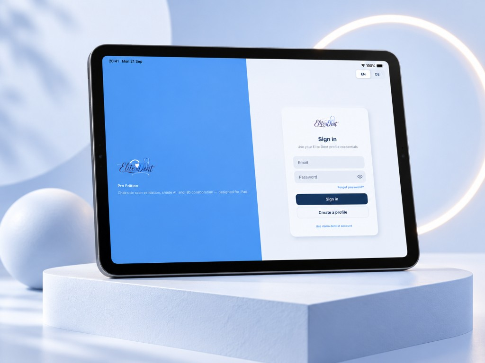
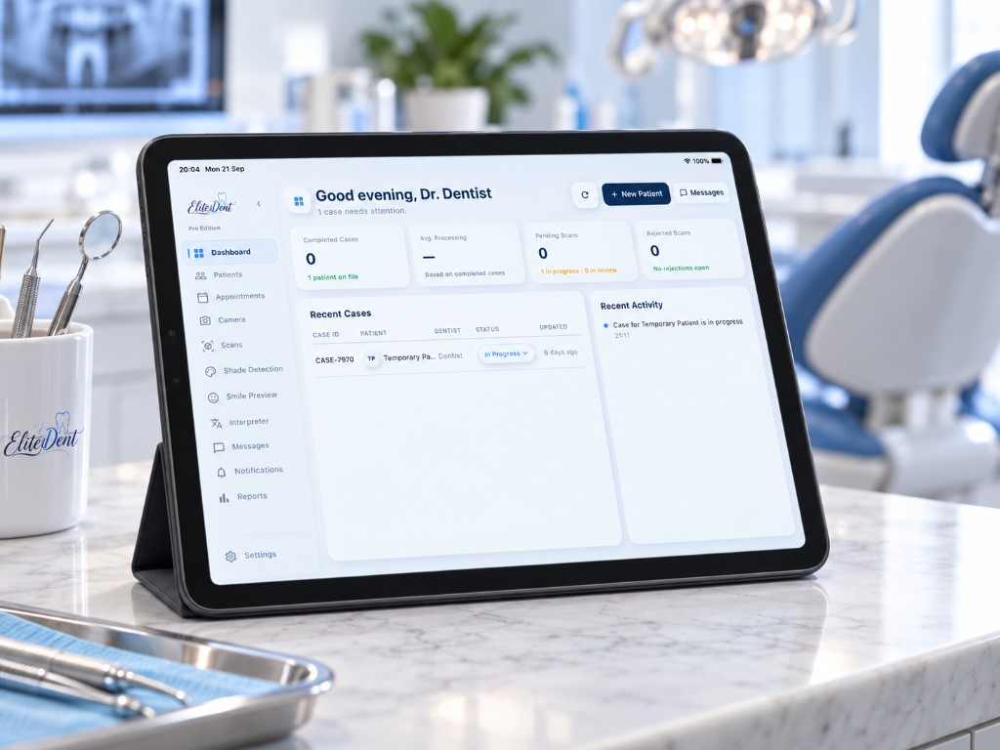
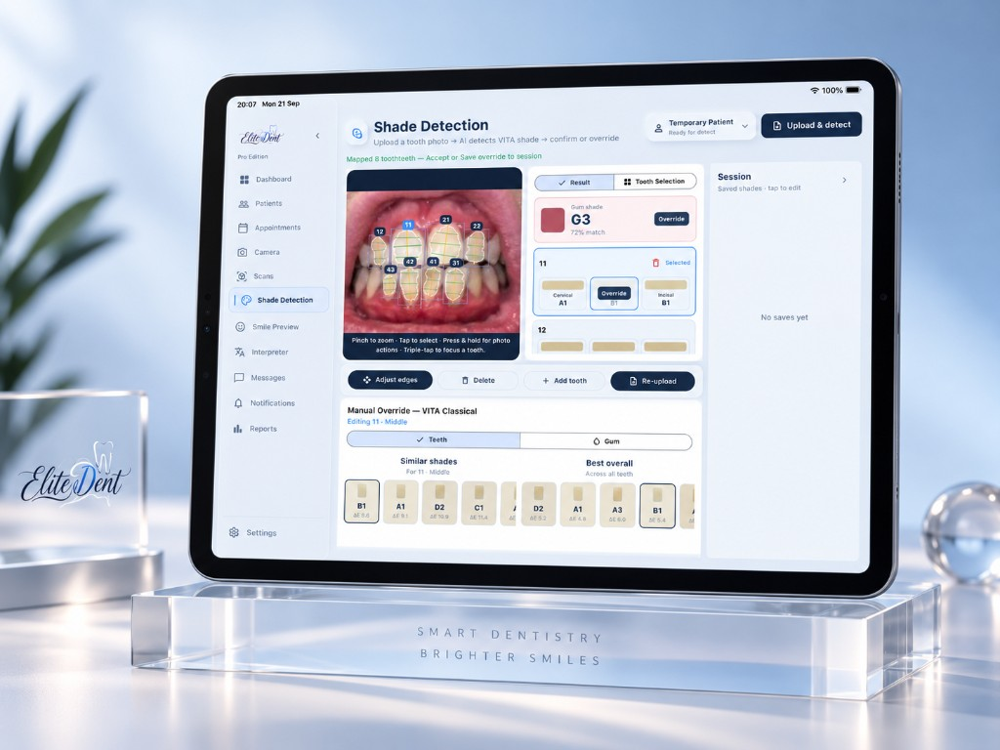
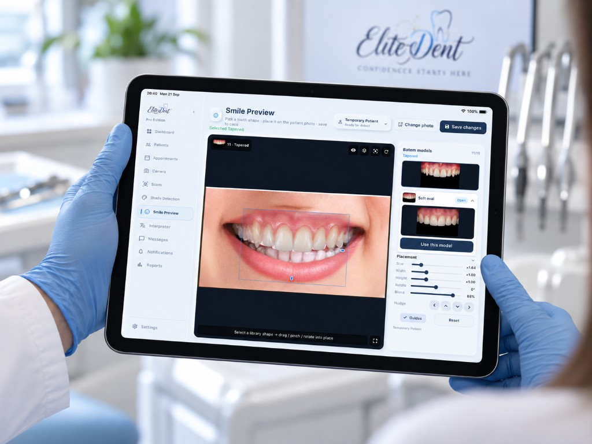
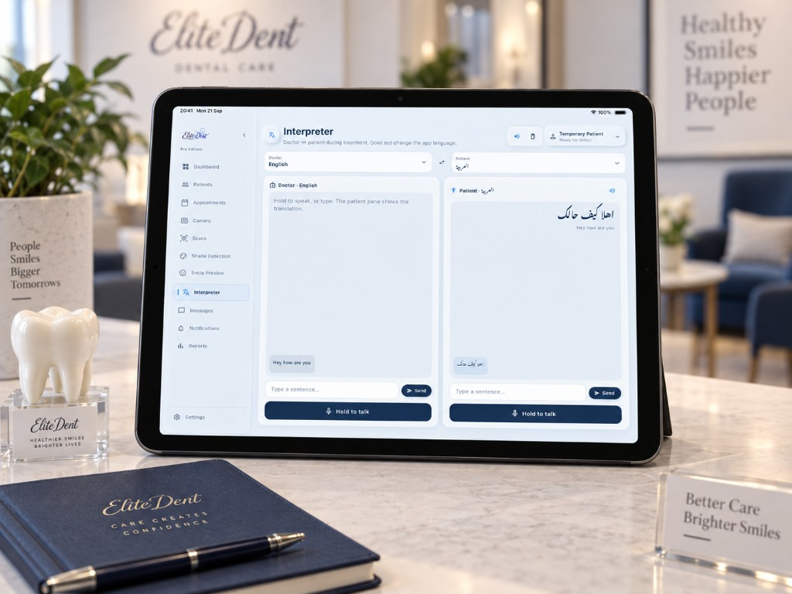
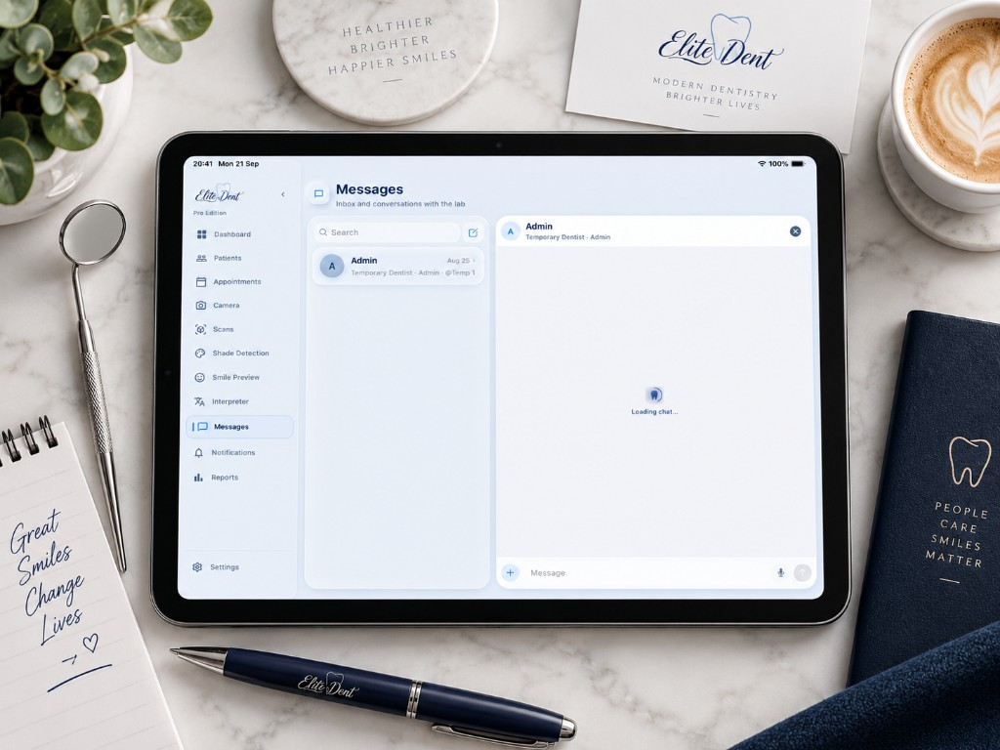

Die EliteDent App für Zahnarztpraxen
Eine iPad-App für die Arbeit am Behandlungsstuhl. Sie hilft bei der Bestimmung der Zahnfarbe, beim Prüfen von Scans, bei der Vorschau auf ein neues Lächeln und beim Austausch mit dem Labor.
Auf dieser Seite zeigen wir die wichtigsten Bereiche und erklären, was dort passiert.


Der Tag auf einen Blick
Nach der Anmeldung sieht die Zahnärztin oder der Zahnarzt, welche Fälle gerade Aufmerksamkeit brauchen. Abgeschlossene Fälle, offene und abgelehnte Scans stehen oben, darunter die letzten Fälle mit ihrem Status.
Neue Patientinnen und Patienten lassen sich direkt von hier anlegen.

Die passende Zahnfarbe finden
Aus einem Foto der Zähne erkennt die App jeden einzelnen Zahn und schlägt eine Farbe nach VITA classical vor, getrennt für Zahnhals, Mitte und Schneidekante. Auch die Farbe des Zahnfleischs wird bestimmt.
Der Vorschlag ist ein Ausgangspunkt. Ähnliche Farben stehen direkt daneben, und die Zahnärztin oder der Zahnarzt bestätigt oder ändert jeden Wert, bevor er gespeichert wird.

Ein neues Lächeln vorher sehen
Im Gespräch über Veneers oder Kronen lässt sich eine Zahnform aus der Bibliothek auf das Foto der Patientin oder des Patienten legen. Größe, Breite, Höhe, Drehung und Überblendung werden von Hand angepasst, bis es stimmig aussieht.
So können beide Seiten über dasselbe Bild sprechen. Die Vorschau hilft bei der Entscheidung, sie ist aber keine Zusage für das genaue Ergebnis.

Verstehen, auch ohne gemeinsame Sprache
Die Zahnärztin oder der Zahnarzt spricht oder tippt einen Satz, und auf der Seite der Patientin oder des Patienten erscheint die Übersetzung. Sie kann auch vorgelesen werden. Das funktioniert in beide Richtungen.
Die Sprache der App selbst bleibt dabei unverändert. Übersetzt wird nur das Gespräch.

Kurzer Draht zum Labor
Fragen zu einem Fall gehen direkt aus der App an das Labor, als Text oder Sprachnachricht. Das Gespräch bleibt beim Fall, so muss später niemand in E-Mails suchen.
Außerdem in der App
-
Scans
3D-Scans von Kiefer und Zähnen werden noch am Stuhl geprüft, bevor sie ans Labor gehen.
-
Kamera
Fotos für Farbbestimmung und Vorschau entstehen direkt mit dem iPad.
-
Patienten und Termine
Akten und Termine liegen an einem Ort, zusammen mit den Fällen.
-
Berichte
Eine Auswertung der Fälle, etwa wie lange die Bearbeitung dauert.
Fragen zur App? Schreiben Sie uns.